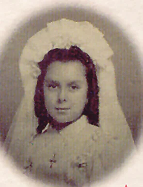
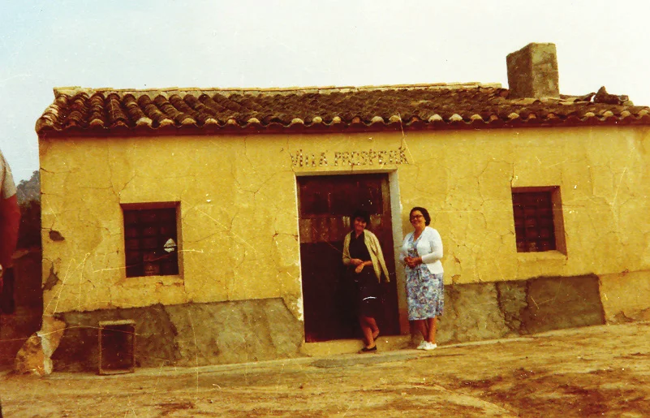
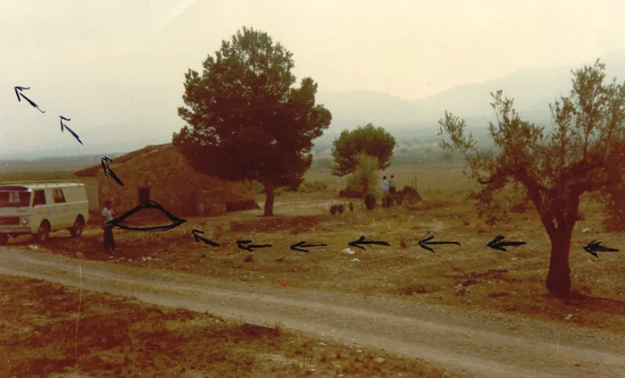
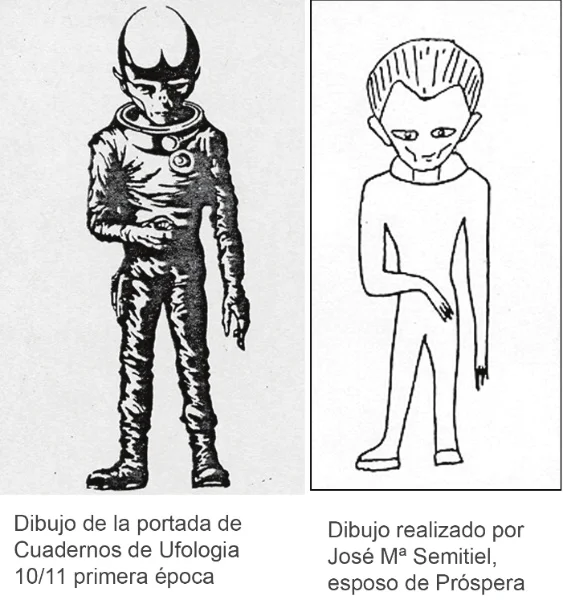
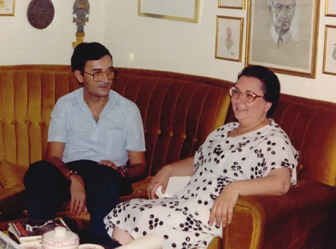
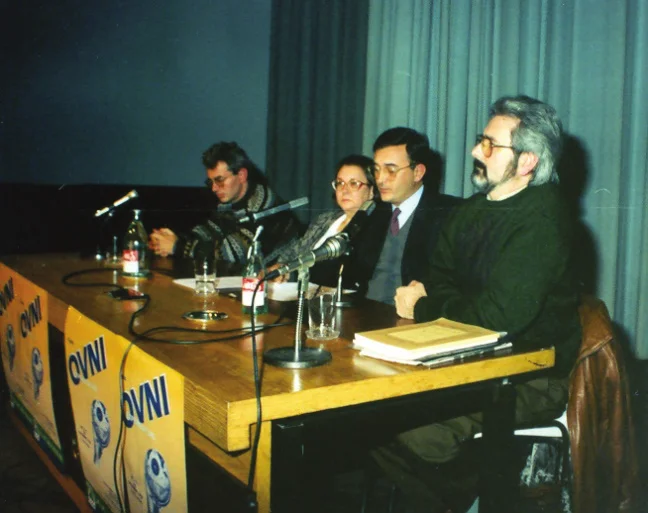
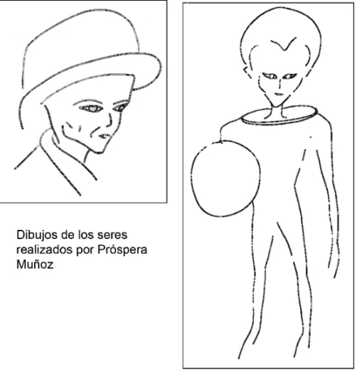
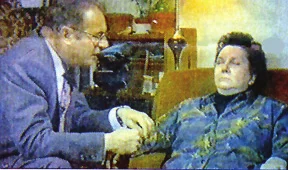

Some strange events that take place between and that its protagonist begins to remember in , attract the attention of the Spanish ufological community. The author considers that it has not been dealt with properly and was publicized hastily, so he commits himself to an unhurried investigation in which he gives the witness the benefit of the doubt. This work synthesizes a view of the process followed for ten years to unravel the reality of a supposed abduction attributed to extraterrestrial beings that seems to have changed the life of the protagonist.
I confess that I should have written a whole book on the circumstances of the present case, but I was always very prudent not to harm the witness, despite the fact that the documentation that I accumulated during ten long years of following it would have allowed me to do so without much effort. I just tried to close the case with my work “Próspera Muñoz, conclusion?” which was published in Ruesga Montiel, José: Próspera Muñoz ¿punto final?, La Nave de los locos, n° 12, , pp. 10-16 and subsequently under the same title in Ruesga Montiel, José: Próspera Muñoz ¿punto final?, Revista Misterios, n° 146, , pp. 22-29.
We are therefore faced with what is undoubtedly one of the most famous Spanish cases, synonymous with the term abduction, which achieved that status thanks to what I call shared irresponsibility. Therefore, we are going to address in a few pages the history of one of the most archetypal cases in Spanish ufology, in which I personally got involved out of a feeling of solidarity with the witness. Does this mean that I agreed with everything in her account? No, certainly not, but I disagreed with how the investigation had been approached and, what is worse, with the way it was published.
My first news about the case came through an Argentine colleague and friend, Mario Luis Bracamonte Báez of the Centro Ovnilógico Riocuartense (the Ufological Center of Río Cuarto)—sadly now deceased—who in one of his many cassettes that we used as a means of exchanging letters, he spoke to me of the participation of Antonio Ribera in a Congress on the subject in which his paper “Próspera Muñoz: a Case of Abduction Remembered Thirty Years Later” III International Congress of Extraterrestrial Science, VI National Congress of Ufology, organized by the Rosario branch of the Argentine Federation of Studies on Extraterrestrial Science (FAECE), held in Rosario (Argentina), was presented. This was in . (Ribera was a prolific and early Spanish writer on UFOs.) In Ribera’s book En el túnel del tiempo (“In the Time Tunnel”) Ribera, Antonio: El caso de Próspera Muñoz: Una abducción recordada treinta años después, in En el túnel del tiempo, Barcelona, Spain, Planeta, , pp. 59-75 appeared, and in the chapter bearing the same title as his earlier paper he reveals the experience of Próspera Muñoz. It is all reasonable and apparently consistent if it weren’t for the fact that, as we know from the story itself, the witness begins to remember the experience in , in she comes into contact with Ribera, and already that same year he makes the story public, to later release it for public consumption in , when the book was published by Planeta. In summary, the story is as follows:
One summer day in or ’47, little Próspera, 7 or 8 years old (Figure 1), along with her sister Ana, 11 or 12, are in a small house that their family had in the country outside Jumilla (province of Murcia, southern Spain) since (Figure 2). They see a shiny object approaching over the fields, which at first they mistake for a car. They think that it is their father, since the two girls were spending time with an uncle of theirs (about 40 years old), and their father had the habit of visiting them on weekends. But they realize that it is not a car when it moves cross country. Her sister, nervous, urges her to close the window. They observe how the object silently passes a short distance from the window, and lands a short distance from it (Figure 3). Ana tries to close the window, but this action is not completed when two men enter through the door.


They were both wearing white one-piece outfits; otherwise, they seemed completely normal to us. One looked young, in his early twenties, tall and thin; the other, shorter and sturdier, looked about forty-five and was undoubtedly the boss. His hair was very black and completely pasted on his skull, so much so that, when I remember him, I wonder if it wasn’t painted on; his eyes were very black and piercing. I remember the young man less: with all naturalness, he asked for a glass of water.

What happened next is rather mundane: they talked about a calendar on the wall, they did not drink the water, they were interested in the pots in the cupboard, and they talked between themselves about what seems to be something that would affect the girls in the future. When Ana, the elder, left, she did not allow Próspera to open the window, through which an intense light entered from the place where the object was landed, causing them to fall to the ground. She says they lost consciousness and that their uncle arrived, alarmed from seeing a plane (sic) take off above the roof of the house.
In the afternoon two people visited, both wearing brown corduroy suits and caps; according to Próspera, one of them was the younger one from the morning. They examined the surroundings of the house and gave her a few suggestions for them not to go to the place where the object had landed. For a few days the door to that room was blocked and when it was opened the food was in poor condition and the girls’ dresses seemed to have lost color. Próspera noticed a metallic object on the table, like two cherries joined by their stems, which she hid in an outer wall of the house.
At night, the three of them slept in a room in the front of the house, the uncle in a makeshift bed on the floor between those of the girls. Próspera woke up to see a man looking in the window. She recognized the younger one from the morning, but now he was dressed in a diving suit, with a helmet and everything. So far, these are blurred memories that after a hypnosis session were translated into a real abduction. With the young man were others, including a strange woman with long hair and a circle of light.
It a debate of the case was proposed in the magazine Cuadernos de Ufología, requesting the opinion of several physicians. The double number 10-11 of the 1st epoch collected Ribera’s account and the opinion of Dr. Antonio Bueno Ortega Ribera, Antonio & Bueno Ortega, Antonio: Próspera Muñoz. Un caso a debate, Cuadernos de Ufología, n° 10-11 (I), , pp. 7-11; number 13-14 would include the verdicts of doctors Antonio Petit Gancedo, Pedro Vicente Rubio Gordo, and Vicente Manglano Baldoví. Several authors: Las abducciones a debate. II parte, Cuadernos de Ufología, n° 13-14 (I), , pp. 19-26 Of all of them, the most critical and harsh was that of Dr. Bueno. There were opinions for all tastes, including that of some skeptics who considered it a waste of time to dedicate effort to the investigation of abductions. As I said, Ribera’s attitude and the opinions expressed on a poorly elaborated and incomplete account, gave me the impression that the witness deserved, at least, the attention of an investigator to verify and/or better understand the intricacies of the case and its content. I started that investigation with two premises: attentive listening and without haste. Then I added something else, to seek support from those who would know more than I in certain fields of knowledge, and I did that by seeking the ideas of various doctors and graphologists. Thus, on , I contacted Ribera, expressing my interest in dealing with the case, which his kindness made possible on .
In a letter dated , Próspera tells me what seems to be the forgotten part of her experience. She writes:
... I went with them carried by another individual, much taller than them, who they told me was a doll. Another was carrying my dog, who had been made to sleep so that he would not make a fuss.
When we got to that great light, it was a vehicle just like the one they had brought in the morning, but much bigger. It is impossible for me to describe it in detail, I have not even been able to do it under hypnosis, I only remember a dome and a wing that surrounded it; the size could be that of a two-story villa. They deposited me on a platform, where they all came to see me, there would be no more than ten or twelve, they showed great curiosity, but no one approached me by more than two or three steps. Those who had brought me took off their diving suits and were left wearing the same as in the morning. We went up a ramp into the vehicle. It was a circular room, to my left there was a series of little screens with different images, now I know it was a closed-circuit television with which they kept an eye on all the surroundings. Several of them were seated at a long table, operating buttons and levers. Those chairs made of an unknown material and without legs caught my attention. The only familiar thing was a movie-like screen in the background. They took me to a device that was manipulated to make a screen appear, with images that at first I did not recognize. They were made up of multi-colored horizontal lines. When I managed to discern the images, I saw that it was us girls, with the dog, the donkey and Uncle Juan. They had filmed us one afternoon before all the events. We seemed to be wrapped in a kind of cloud or light that came out of us, in bluish tones... They told us that this halo was the reason why they visited us, that there they could read the quality of our feelings... The animals appeared without that halo. [Figure 4.]
While we were looking at these scenes one of them approached, saying: “They are there now.” They told me it was time for us to get ready, we went up a vertical staircase in the center, to the dome. There were two sitting in front of some panels that were strange to me. The dome opened diametrically, and we got out and positioned ourselves on top of the wing. They made me look at a star that was getting bigger and bigger. There we go— they told me—above all do not be scared. A luminous circle appeared on the wing, about 80 centimeters in diameter, as if they had lit up a giant lantern from above; they assured me that it was an elevator.
They pushed me into the circle and I began to ascend, slowly at first, then accelerating at an impressive speed. After a while, it slowed down and I felt like they were taking me out of there with great care. We were on a framework of beams, something like a horizontal scaffold. There were several more of them dressed in black mime suits, and the lighting was extremely limited. We walked on one of the beams, their boots adhered to it, but not my shoes, so they held me everywhere, and thus, with great care, in short steps, we covered about two or three meters to eaves where a door opened, through which we entered. After walking down a long corridor, they show me into a room and leave me there alone. The room looks like a loft, that is, it has a sloping ceiling, a small window, and a long table. From another door, located at the front, my companion came out with 6 or 7 others in white lab coats.
I was subjected to a complete physical examination, during which I felt nothing at all, they joked with me the whole time and were amazed at my submissiveness. While they were manipulating a pair of scissors, I noticed their hands. One of them agreed to take off his glove so that I could get a good look at it, they had only four long fingers with flaking skin, narrow nails, and webbing between them.
They brought in a kind of folding screen, they placed it in front of me, they plugged in a lot of cables and some grey spots began to appear on a little screen. They told me that those spots were inside my head, but I did not understand how my head could be split in half. Now I understand that this was my brain. They showed me some slides—as they called them—but they had to be microscopic, because I didn’t see them. They injected them into the back of my neck. Everyone was attentively watching the screen, where a flashing red dot was seen advancing, until they made sure it was in the right place. After I got dressed, we went back to the elevator and when we got down I was really scared, because, unlike when I went up, my hair came to my face, it went in my eyes, mouth and ears and it was impossible for me to get it out. When we got downstairs, they calmed me down. Looking up at the sky, I saw a train [sic] with windows that went around us as a farewell... When they took me home it was still night, everything could have happened in about two or three hours.

The experience seemed to end here, but Próspera herself assures us in the same letter:
They came to see me around the year ’53, then it would be ’60, again about ’72 and the last time three years ago. I have never recognized them. [sic]
What the dissemination of the case produced in Próspera—restlessness, personal involvement in the ufological
environment, along with uneasiness—motivated me three years after the beginning of my investigations to publish the
work “Próspera Muñoz: A Case Reported and Little Known,” Ruesga Montiel, José: Próspera Muñoz. Un caso divulgado y poco conocido, Cuadernos de Ufología, n° 4
(II), , pp. 51-65 it was something I owed her so she could
settle down. Moreover, the ufological community was demanding news after three years of silence. Only Ángel Alberto Díaz was able to issue an acceptable critical judgment. The others, who
generally gave their opinions in private to the author, undoubtedly did not know how to read between the lines, or
even verbatim, which originated a torrent of very diverse opinions, from the one issued by Ignacio
Cabria, who said: ... Ruesga affirms the witness’s sincerity, but fails to pronounce on the material
reality of Próspera’s successive encounters with aliens throughout her life,
Cabria,
Ignacio: Entre ufólogos, creyentes y contactados, Santander, Spain, Editorial Cuadernos de
Ufología, , p. 177 through that of skeptics for whom investigating abductions is a
miserable waste of time,
up to that of a certain malicious writer who notified the witness of his opinion that
Ruesga has betrayed your friendship.
Fortunately, in this last case, the witness had such a degree of
confidence in me that she did not hesitate to tell me about this insinuation for what it was, the crude intention to
provoke a confrontation with the investigator in order to get an easy opening into the case. (Figure 5.)

After the publication of my article in Cuadernos de Ufología in , my contacts with the witness continued to be frequent, very lengthy, and full of deep mutual trust. Such a degree of collaboration existed in the following two years that Próspera did not hesitate for a single moment to accompany me to Santander to give a lecture on her experience, which was organized in by Cuadernos de Ufología in collaboration with Caja Cantabria, as part of the program “Ovnis: Experiencias y analysis” (“UFOs: Experiences and Analysis”). This time we has the opportunity—once again—to spend many hours in a row together. Her husband, José María, accompanied her. There it was said again that there was no evidence to consider the material reality of her experiences, and I reasserted that Próspera was not lying, because she fully accepted what happened as real.
In our conversations, some differences arise about the opinions expressed. For example, it turns out that the drawings and sketches accompanying the first accounts had not come from the hand of Próspera, but from that of her husband. In addition, the husband talks about the unreliability of the tests carried out, based on his experience in the company he works for.
Meanwhile, the witness continues to be subjected to all kinds of pressure in an irresponsible way. Her presence on
radio, press, and TV is constant, sometimes on style shows, such as the program
“A mi manera” (“My Way”). Also, with researchers such as Ribera. Próspera had entered into the realm
of the researchers themselves through these channels very early on—her own husband is fond of the subject—which
makes her presence and participation very peculiar, it is not that of a researcher-witness relationship, but rather
that of two interested parties. Rare is the researcher who has not established a correspondence with “Peri,” or who
has not taken her to public events or participated in her gatherings in Gerona. As Ignacio Cabria would say in his book already cited: ... do not
forget that thanks to her case she has been introduced into the environment of paranormal investigators.
Cabria, Ignacio: Entre ufólogos, creyentes y contactados, Santander, Spain,
Editorial Cuadernos de Ufología, , p. 177 (Figure 6.)

The conference in Santander marked a milestone in the investigation process. The witness tirelessly seeks to answer my doubts, with our exchange of letters maintaining a sustained interest for some time, which is not surprising, because since the beginning of the investigation the correspondence had become very fluid and intense. However, in her letter of , Próspera Muñoz says:
I feel the need to clarify everything regarding the matter of the drawings, there was never any intention of deception, it was just a misinterpretation, the important thing was the details and clarity. It never occurred to me to think that they would serve for undertaking a personality study. [Figure 7.]

So, this prompted our interlocutor to return to the drawings of what she had seen. Her letter said:
The subject of drawings is the most problematic, I spent all afternoon yesterday on them, and I only get what you see. They are mine, but they do not express with the maximum fidelity the mental image that I have of my “friends.” The first illustration [Figure 7] corresponds to the first visit, it is not very successful because I cannot get rid of that feminine aspect that they did not really have, nor can I give it the tremendous elasticity and agility that they possessed.
The basic characteristics of the beings observed by the witness in her first experience can be defined as follows:
At this stage of the investigation, the student already has an impartial judgment of the facts. When Próspera begins to have her strange memories, there does not seem to be any event that justifies it, at least so it seems. However, for the beginning of the story, it is crucial to know certain dramatic family events that occurred in , which I cannot disclose.
The memories begin in and it is not until that she comes
into contact with Antonio Ribera. It is symptomatic that the memories begin by reading a
book about UFOs. The story that she tells Ribera and which he
hastily makes known in En el túnel del tiempo, tells us about her first experience. When she
describes the beings, she says: They both wore white one-piece outfits; otherwise, they seemed completely normal
to us.
[sic] Only two features stand out, very black hair, completely plastered against
the skull
and the eyes were black and penetrating
.
Not until does Próspera rectify what she saw, and she does so after having read Ribera’s book Secuestrados por extraterrestres (“Kidnapped by extraterrestrials”). Ribera, Antonio: Secuestrados por extraterrestres, Barcelona, Spain, Planeta, Then she made a series of arguments, establishing that the beings should measure between 1.40 and 1.50 m.
When we come into contact with her in , her description is already much more elaborate, and her account says:
Two beings approximately 1.40 to 1.20 meters tall [sic], dressed in white one-piece outfits, very thin faces, very thin lips, huge eyes that stretched out toward the sides, huge skull, very bulging temples (revealing huge purplish veins), very white in color, broad shoulders, very thin body, tight suit, boots with very thick soles, hands without thumbs, very long and with skin between the fingers, thin arms and longer than normal, with a significant lack of musculature.
If we assume—as we have already said—that the drawings made then, despite not having been made by Próspera (her husband made them, following her instructions), can be compared with her different accounts and with the cover of issue 10-11 of Cuadernos de Ufología (1st epoch), an issue that addressed the debate on the case of Próspera and to which she had access at the time.
The differences between accounts are evident: from “completely normal” to this description where any resemblance
to normality is purely coincidental. It is curious that little by little everything is modified and becomes
increasingly complex and strange. In her letter of , there is already
something that draws our attention: on the visit to the house at noon they are dressed in a tight white suit and do
not wear a helmet or diving suit, later they wear a corduroy suit and cap and at night the same as in the
morning
, wearing a diving suit. But also, as we see in a new version of the events in , there are new elements added: very thin neck
, transparent helmet
and long gloves
, and omitting others such as boots with very thick soles
. There is an evident
metamorphosis, an evolution of content caused by her continued active presence in the ufological world during these
six years. Does Próspera lie? I am convinced that she does not, but the subject is much more complex and simpler at
the same time.
Her story is a conventional story within abductions, it follows general norms despite the differences in nuance; what is abnormal is the memory-recovery process. It is not a matter of accessing blocked memories through the use of hypnosis, but rather that they appear suddenly at a certain moment in her life. It is the reading of Ribera’s book El gran enigma de los platillos volantes (“The Great Enigma of Flying Saucers”) Ribera, Antonio: El gran enigma de los platillos volantes, Barcelona, Spain, Pomaire, which serves as a trigger, and curiously for a person who admits to being a fan of the subject, what draws her attention is precisely the silent nature of the event at noon. Hypnosis is used frivolously and without any guarantees, and the only thing it has done in this case is to reaffirm previous knowledge. Moreover, the readings and the discussion in which Próspera participates, even with me, in the course of the investigation, does nothing but improve the subject matter, refine the doubts and failures in her own memory, therefore creating elements absent from the original story.
Próspera continues with a detailed recollection of the beings she saw in the bar in Jumilla, which was the second of the visits described in the first step of the investigation process:
This visit corresponds to the second illustration [Figure 7], which I consider quite successful, so much so that when I look at it, it impresses me, although I have not managed to capture some details such as the arch of the eyebrow that was very pronounced and the eyes, which despite their size were very sunken...
The description of how she sees them can be summarized like this:
Now five successive visits are documented at different moments of her life, in the third one Próspera highlights the total absence of muscles, since they had bare arms and legs, as well as their olive tan color. After all, this was at San Juan Beach in Alicante.
During the fourth visit, in the telephone office where the witness worked, she was struck by the fact that they were small and thin, and with raincoats despite it being the middle of summer. In so many statements she had made previously, she said that she was the only one to see them and now she tells us literally:
... My coworker made a comment about the color of the skin, between brown, grey or bluish and that she found them very ugly.
As Ignacio Cabria wrote in the aforementioned book: the subject having had access to
what was published about her experience... has made Próspera unconsciously introduce new elements in her story.
Cabria, Ignacio: Entre ufólogos, creyentes y contactados, Santander, Spain,
Editorial Cuadernos de Ufología, , p. 177 Here it is obligatory to
draw the reader’s attention to the fact that before she always maintained that no one else saw the strange
visitors, and now there is someone who seems to corroborate the fact, but also adding something more in line with
the knowledge acquired, that the skin is grey or
bluish.
Now returning to the fifth visit, Próspera will tell us:
I only remember that I [sic] saw them small, pale and that the woman was wearing an old-fashioned blonde wig and they were all wearing small caps.
That the witness maintains an absolute conviction that she relates real events, the following words can serve as a sample:
In all honesty, my abduction from the beginning has been a real event, a memory as vivid as any other in normal life; I swear to you that, if I reject these memories, I would also have to reject all the rest of my previous life, I cannot deny them because to do so I would even have to doubt my name.
The witness’s account was strange but, due to the many interferences occurred over 38 years, it has become a very extravagant tale. When she first speaks of her experience, she had read everything published in Spanish, which was very little, and yet her account did not resemble that of the Hills, although Ribera tried to compare it to theirs. Then, almost five years later, the story already looked more like the Hopkins models, to finally more closely resemble those that circulate about the “greys.”
Around the same time—the year —my contacts with Dr. Carles Berché, a member of the Cuadernos Collective, had made us consider some questions that were mandatory to confirm some of the things that the investigation had been uncovering and that, if it were not done, they made it necessary to leave totally unknown certain facts related by Próspera Muñoz. It involved diving into the subsequent encounters with the humanoid figures and subjecting them to a reliable psychological test, evaluated by Dr. Berché himself (I used Adell’s 10 x 10 test) Adell Sabatés, Alberto: Psicometría, in Manual del ufólogo, Barcelona, Spain, Editorial 7½, Collection “Sí. Están,” , pp. 55-66 as well as doing an X-ray and a Magnetic Resonance Imaging scan (MRI) of her skull, which would allow for the capture of water densities, that is to say, a living tissue—only cells—where differences from another tissue of different composition can be detected. The MRI would expand on what was obtained by X-ray. Próspera’s disposition was excellent, as demonstrated by her words in the same letter of , in which she said:
We will do the brain scan and whatever you want when you see fit...
Unfortunately, the fluidity of our communication is broken on her side until . Beyond that, nothing on the case, just personal issues, feelings expressed in spurts, which is a symptom of lack of concentration. From then on, her letters got further and further apart. My insistence is at times restrained by our existing friendship and a scrupulous respect for her privacy. When she doesn’t answer, there must be compelling reasons, I thought.
Thus, on , I received a page from the magazine Tele
Indiscreta, which reads: Next Thursday on the program ‘Who Knows Where?’ a woman explains her experience with
UFOs.
Accompanying the report is one photo of Billy
Meier and two of Próspera, the latter apparently asleep. On , I write to her and,
among other things, I say:
Several days ago, by chance I saw you on television... If I have to be honest, it gave me a certain shudder to see you on the screen, subjected to hypnosis... [Figure 8.]

A short telephone conversation with her husband tells me that she is going through a crisis, of which I will only say, out of respect for privacy and our friendship, that it was serious enough for me to keep silent for several months. On , Próspera writes me a heartbreaking letter. Among many other things, she tells me about the simulation of hypnosis made for the program at the request of certain people, whose names I omit due to the discretion I owe to Peri’s private communications. The reaction is consistent with the damage done to her, and she tells me:
I do not want to continue any kind of research on myself, whatever I had to say has already been said, if something new happens, which I doubt, you would be the first to know, but I would not give it to everyone as I have done so far, because reporters have a habit of distorting everything, embellishing stories to their liking, they only want to show off their own personal brilliance.
So this closes off any possibility of investigating those aspects that we had agreed on with Dr. Berché. Curiously, the promise that she makes to me is not fulfilled, because throughout subsequent years she has continued giving interviews and participating in whatever is proposed to her, without returning to take up research with me.
A mutual friend writes to me throughout and, commenting on Próspera’s
silence, she tells me: I have a special interest in letting you know how much I know that Próspera Muñoz valued
you in my presence, without a doubt she must be going through a difficult time.
In a further letter, dated
, she confirms to me that Próspera suffers from a very strong depression, something that
Semitiel—Próspera’s husband—had already made me understand in our aforementioned telephone conversation.
My contacts with Próspera continued over time, until a suspension in . They were limited to a conversation between friends, without any allusions at all to her experience, not even to her current feelings on the matter. Próspera Muñoz has returned to her birthplace, Jumilla, where she has reencountered her family and herself. One day, before these last experiences, she herself wrote in the pages of the magazine Más allá de los ovnis (“Beyond UFOs”) Several authors: Mutación de conciencia en los abducidos, Enciclopedia Más allá de los ovnis, Madrid, Heptada Ediciones, , Tome 2, Chapter 18, pp. 409-432:
In , with Antonio Ribera, I attended a UFO congress in Ciudad Real and a new conference on UFOs in Madrid, in . As a result of offering my testimony publicly in those forums, several researchers approached me, and at the same time others curious and interested in the topic of UFOs also did so... In this way, I was getting up to date with other currents within ufology that offered supposed messages received from entities connected to UFOs.
Próspera Muñoz’s case came to the investigation with great problems, with too much haste on the part of those who did the investigating. Without guarantees about the hypnosis sessions and without measuring the personal implications of the witness in the ufological media. When I tackled researching her in , I tried to learn about several aspects:
Neither grandfather nor Uncle Juan remember anything,he tells me. Her sister Ana, after much insistence, confirmed to us on , that she recalled that in the summer of events occurred that are limited to the observation of a shiny object, like nickel-plated, which approaches them without any noise. It gave the impression that it was taking over the entire environment. After my insistence for more data, only complete silence. Muñoz Jiménez, Ana: letter to José Ruesga,
I cannot accept the material reality of the facts because the evidence shows that her story is of another kind, closer to psychological, and whose ultimate causes lie in a difficult family situation in , an evident lack of self-esteem at the time of the beginning of the memories and the demand for attention when she finds herself welcomed by Antonio Ribera and then by all of us who are interested in her supposed experience. Some things remained to be done, which would undoubtedly have led us to less controversial conclusions: the psychological test, the X-rays and MRI proposed by Dr. Berché, or finding the mysterious contraption supposedly hidden by Próspera in her namesake villa, which contrary to the opinion of some, was searched for without success.
Her own words could be a good coda to the whole case:
Whatever plane they come from (another planet, another dimension or any hidden place in my brain) [emphasis of the author], they all deserve my respect and thanks, since they forced me to take a big step on the path of my own personal development.
And certainly, this would have been a magnificent coda if it weren’t for the fact that throughout the years from to the present day, Próspera has continued to promote herself in public by giving interviews and attending meetings and congresses, showing that she is comfortable in that environment and not safeguarding her emotional integrity. For example, the publication of the article “La niña secuestrada por extraterrestres” (“The Girl Kidnapped by Extraterrestrials”), also in , Josep Guijarro: La niña secuestrada por extraterrestres, Expedientes secretos (supplement n° 26 of magazine Tele Indiscreta), n° 4, , pp. 3-12 or the articles published by La Verdad de Murcia, in its “Evasión” supplement (which her own husband criticizes in Tierra 2), Semitiel, José Mª, in Tierra 2, n° 13, . Commentary on article by Maravillas Ledreras (pseudonym) about the abduction of Próspera Muñoz, published in the daily La Verdad de Murcia, supplement Evasión, in El País in , Castro, Alfonso: Próspera Muñoz fue secuestrada por extraterrestres hace 36 años, El País (Madrid), in Más allá de los ovnis in , El caso de Próspera Muñoz, Más allá de los ovnis, , pp. 55-61 references and interviews on the internet, and many more.
A few years ago, Jorge Sánchez phoned me, asking for my research on the case, and I referred him to what was published in Cuadernos de Ufología and explained that I keep a large amount of information as a result of my ten years spent monitoring the case, but that I was reserving it for a possible future book. He told me about his book project in which Próspera was openly collaborating, a book that I read when it was eventually published, under the title Contacto entre dos mundos: Las extraordinarias experiencias ovni de Próspera Muñoz (“Contact between Two Worlds: The Extraordinary UFO Experiences of Próspera Muñoz”). Sánchez, Jorge: Contacto entre dos mundos: Las extraordinarias experiencias ovni de Próspera Muñoz, Porriño, Spain, Cydonia,
After that, I located Próspera Muñoz on Facebook and we reconnected. That is, until , when after congratulating her on her 81st birthday, I never had any more response from her. (On , I discovered that she had blocked me on Facebook. This was soon after she had appeared, once again, on the DMAX series “Extraterrestres.”)
Reading Jorge Sánchez’s book was a big surprise to me. On the one hand, there is no mention of the ten years of contacts with me but, nevertheless, it says verbatim:
It was at that exact point in Peri’s life that the proposal arose, by two Sevillian researchers—José Ruesga and Miguel Alcaraz—of subjecting her to the controversial polygraph, in addition to a new hypnosis session.... Sánchez, Jorge: Contacto entre dos mundos: Las extraordinarias experiencias ovni de Próspera Muñoz, Porriño, Spain, Cydonia, , pp. 63-64
This assertion is totally false, as my proposal was made in agreement with Dr. Berché, and at no time does it speak
of polygraph or hypnosis as stated above. And much less that it could have been done with Alcaraz, whom I am fond of
but with whom I have never undertaken any investigation related to Próspera’s case. Moreover, it talks about facts
and circumstances that Próspera had never referred to before in all her accounts. This ends with the description of
some red spheres like marbles, of which she says: when I touched them I felt a tremendous burning
. As if this
isn’t enough, Próspera is quoted as describing the visitors: He wore a kind of transparent helmet on his head,
like glass, I suppose, which reminded me of ordinary spherical fishbowls
, when you don’t have to do more than
read her original statements to see the differences. And she even goes so far (allegedly) as to declare to Sánchez
that they came from Venus, but not the Venus that we
knew
.
Now Próspera’s sister also decides to talk about the experience and speaks with all kinds of detail about the first sighting of the events in Villa Próspera, claiming that she did not do so before because her husband was skeptical of these matters and she did not want to be involved with the press.
Jorge Sánchez did two things well. First, he asked about the implant, to which Próspera replied that they did a scan for an ailment she had and that nothing strange appeared (?), without mentioning Dr. Berché’s proposal and her refusal. And second, he made a search for the strange artifact that Próspera hid in the wall of the house using a pachometer (a device used to detect the presence of ferromagnetic materials like steel and iron embedded in concrete), but without results even after drilling up to 30 cm of the wall where the device gave a signal. That is, there was no implant, nor was there a metallic device in the wall.
Once again the story is modified, for the umpteenth time. Evidence that could have verified the veracity of certain aspects of her story is not found. Popularity and satisfaction are still sought after despite the fact that she says otherwise when talking with somebody one-on-one. And we are left only with the testimony of her sister. I always stood up for her, saying that she was telling the truth, and was convinced of her experience because a certain psychological reaction to daily events was operating in her, causing discomfort. But now all this makes me question the entire story.
Dr. Antonio Bueno Ortega said that, if she believes it, even if it is not real, she will relate it as such. Hypnosis only serves to deepen and update the subject, implanting memories that are not real, rather than helping discover the truth. He also said that she could have family problems, and there were, in fact, personality problems in —a lack of self-esteem was detected that was later apparently corrected by her dealings with researchers; she was a patient prone to depression due to frequent anemia; and she managed to attract the attention of her husband who was fond of these issues. We do not know if there was an episode that marked her childhood, other than what she says.
My final diagnosis is that the subject matter is not real, it is a confabulation, a fantasy that she has been recreating repeatedly to which she has added new imaginary data. She may believe it to be true, although everything leads one to think that she has consciously avoided everything that could ruin her story. The role of her sister is difficult to understand, because if it is true that she lived the same experience in that first meeting, why did she abandon her sister in the face of people’s incredulity? Why didn’t she reaffirm those brief lines that she sent me that led me to believe that they had been dictated by her sister?
Let’s look at some of the most difficult points:
I have never recognized them.If so, how does she know it was the same ones?
At all times I have been scrupulously honest with Próspera Muñoz, to the point of not making public conclusions that could affect her psychological integrity. But the desire to continue feeling herself the protagonist and center of attention has been more powerful in her, rather than the safeguarding of her own integrity. I have the moral peace of mind of having been excessively scrupulous in my dealings with her, to whom I unconditionally granted my friendship. For me, then, the case has now reached its conclusion.
My gratitude to Richard W. Heiden for an excellent translation from Spanish.